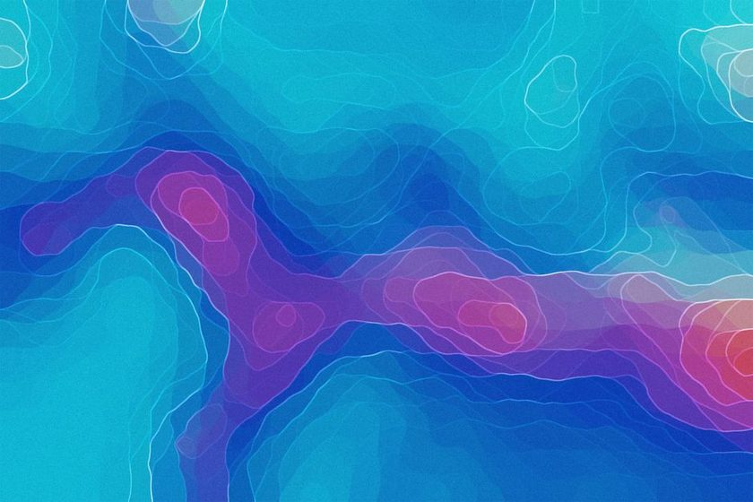
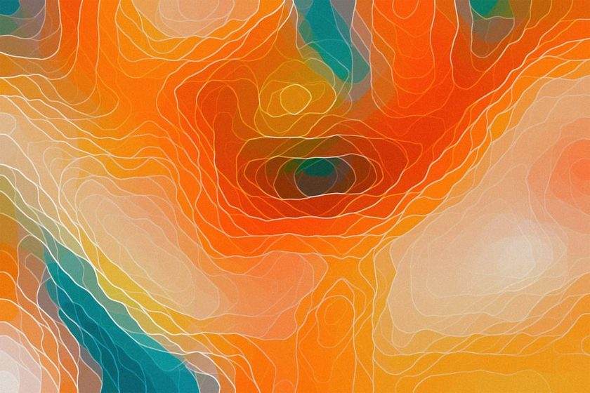
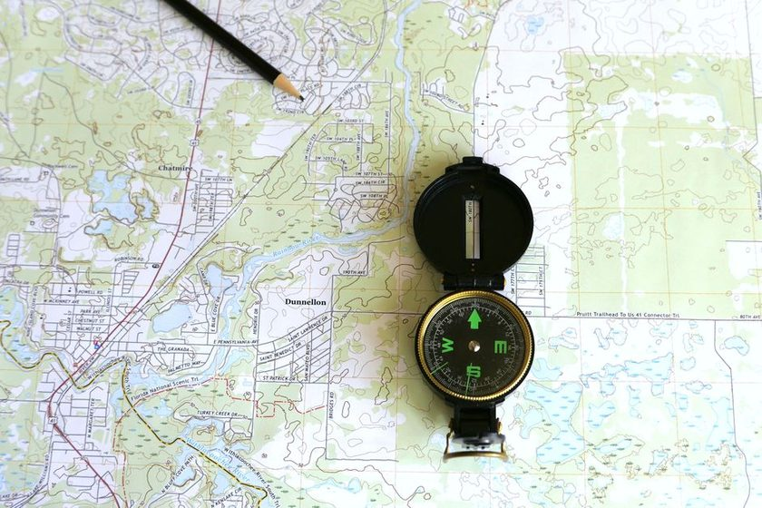
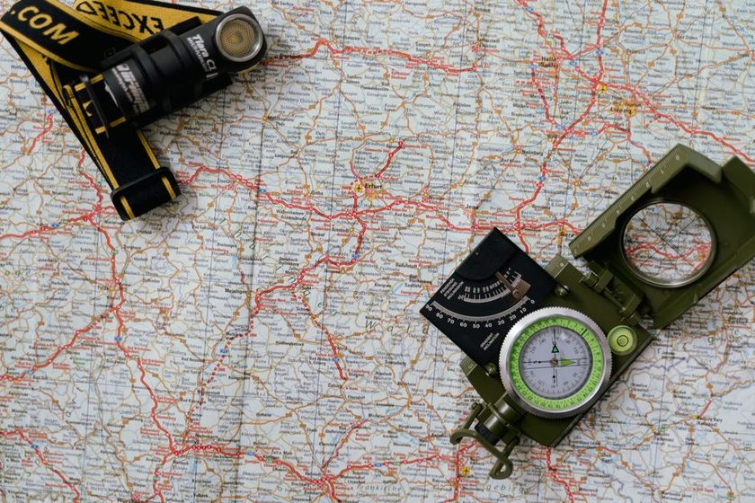
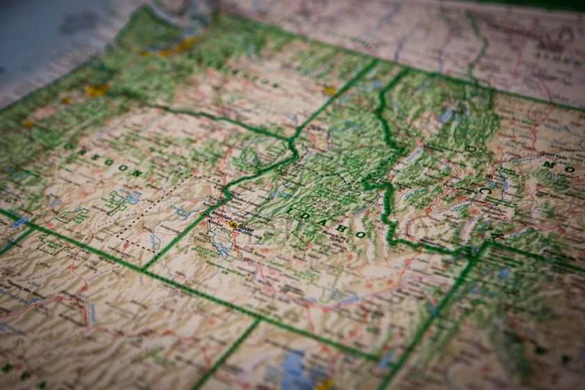
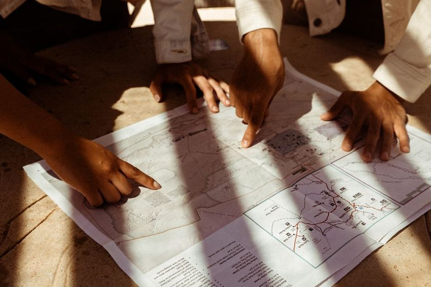

Projection
The Projection You Didn't Choose
Every flat map bends the earth somewhere. The question worth asking is where the cartographer decided the bending would go unnoticed.
Contourline is a small, independent notebook on amateur cartography — projection, contour lines, scale, and the quiet decisions a cartographer makes about what gets shown and what gets left off the sheet.

Every flat map bends the earth somewhere. The question worth asking is where the cartographer decided the bending would go unnoticed.

Spacing, closure, and direction turn a page of squiggles into a hill, a cliff, or a basin — once you know what each one is narrating.

Below a certain scale, the cartographer must delete something. What survives the cut says as much as what's shown.

A scale bar looks like the most honest mark on the page. It is also the easiest place to hide a distortion.
Before satellites, an empty patch of chart wasn't neutral — it was a decision, and sometimes a guess dressed as fact.

Three norths live on the same sheet, and a bearing that ignores the difference will walk you somewhere else entirely.

A legend claims to be a neutral key. Read closely, it's the cartographer telling you what mattered enough to symbolize.

A map that agrees with the ground everywhere gets no credit. Where it disagrees is where the reading actually happens.
Two maps of the same coastline, two different datums, and a shoreline that jumps a hundred meters between them.
A quiet, offline companion for the maps you already carry — it stores grid references, contour intervals, and declination notes on a single card per route, no signal required.
See how it works